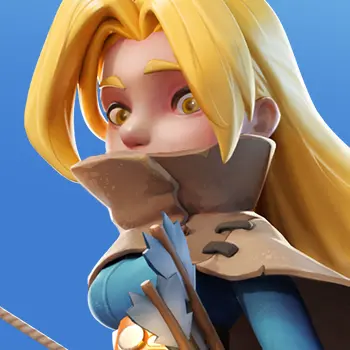

Дождь стрел
Наносит 180 / 198 / 216 / 234 / 252% урона по области вокруг цели.

Редкий герой · Стрелки · Развитие
Редкий стрелок развития. Помогает с производством и сбором мяса, а в бою наносит урон по области и усиливает атаку по отмеченной цели.
Базовые показатели героя из справочника.
Ключевые эффекты навыков и их развитие по уровням.
Наносит 180 / 198 / 216 / 234 / 252% урона по области вокруг цели.
Повышает урон по отмеченной цели на 10 / 15 / 20 / 25 / 30% для этой атаки.
Повышает производство мяса в городе на 5 / 10 / 15 / 20 / 25%.
Повышает скорость сбора мяса на карте на 5 / 10 / 15 / 20 / 25%.
Клорис полезна в раннем развитии города благодаря бонусам к мясу. В исследовании её навыки дают урон по области и дополнительный урон по отмеченной цели.